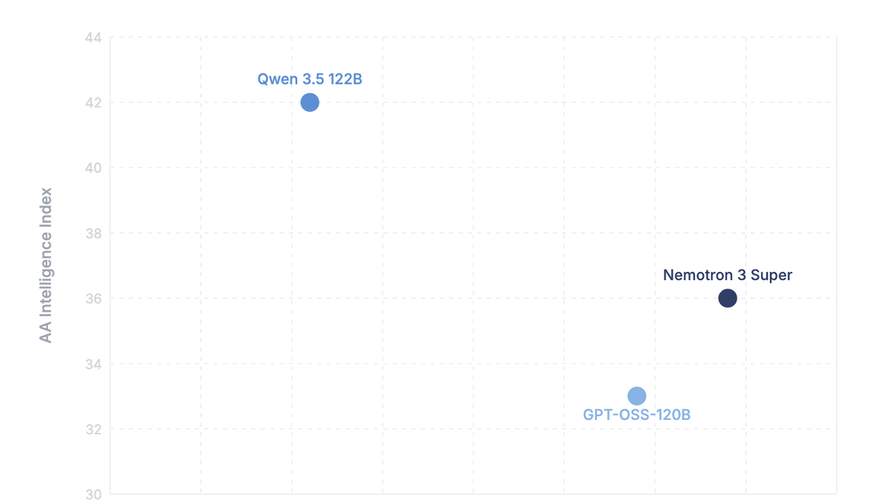

Open-Source-Modelle sind konkurrenzfähig

Innerhalb einer Woche haben zwei grosse Open-Source-Modelle die 120B-Klasse erreicht: Qwen 3.5 von Alibaba und Nemotron 3 Super von NVIDIA. Beide sind kommerziell nutzbar, laufen auf eigener Infrastruktur und konkurrieren direkt mit proprietären Modellen wie GPT-OSS-120B.
Qwen 3.5 122B übertrifft das Vorgängermodell in praktisch allen Benchmarks. Besonders relevant: Es versteht Bilder und Dokumente nativ, von Rechnungen über Pläne bis zu Screenshots. Bei Allgemeinwissen, Programmieren und Tool-Nutzung übertrifft es GPT-5 mini, ein proprietäres Modell von OpenAI. Und es läuft auf derselben Hardware wie GPT-OSS-120B, ein Upgrade ist nicht nötig.
NVIDIAs Nemotron 3 Super setzt andere Prioritäten. In vielen Benchmarks liegt es gleichauf mit GPT-OSS-120B oder darüber, bei 2.2-fachem Durchsatz. Verglichen mit Qwen ist Nemotron laut NVIDIA sogar 7.5-mal schneller, bringt allerdings keine native Bildverarbeitung mit.

Für On-Premise-Setups ergibt sich damit eine echte Wahl: Höhere Benchmark-Werte und Dokumentenverarbeitung mit Qwen, oder höherer Durchsatz mit Nemotron. Beide Modelle laufen vollständig auf eigener Infrastruktur, ohne API-Abhängigkeit. Dass es in dieser Grössenkategorie inzwischen echten Wettbewerb gibt, ist an sich bemerkenswert.